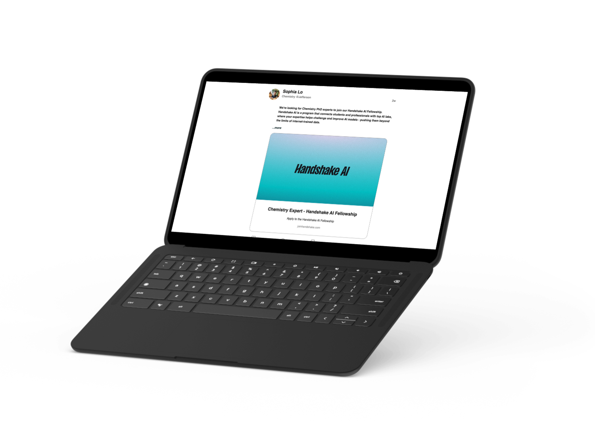
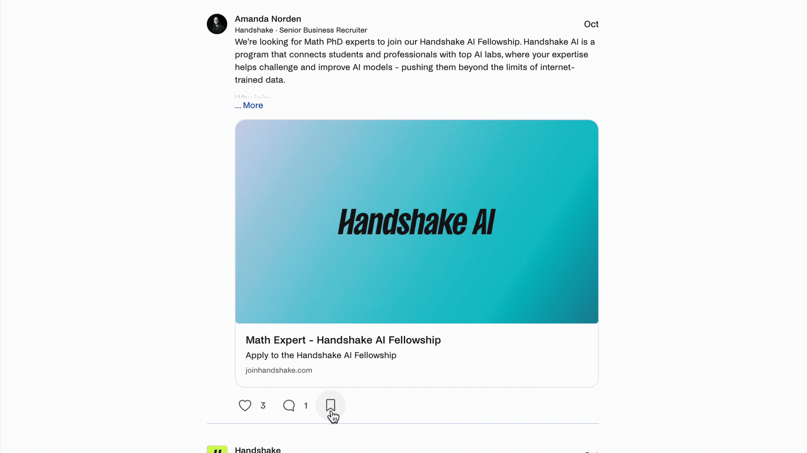
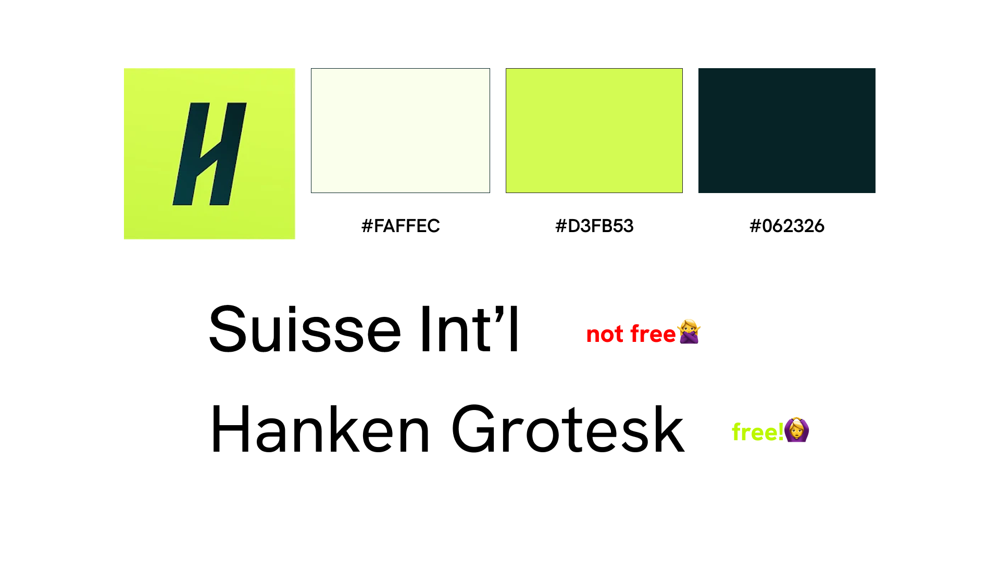
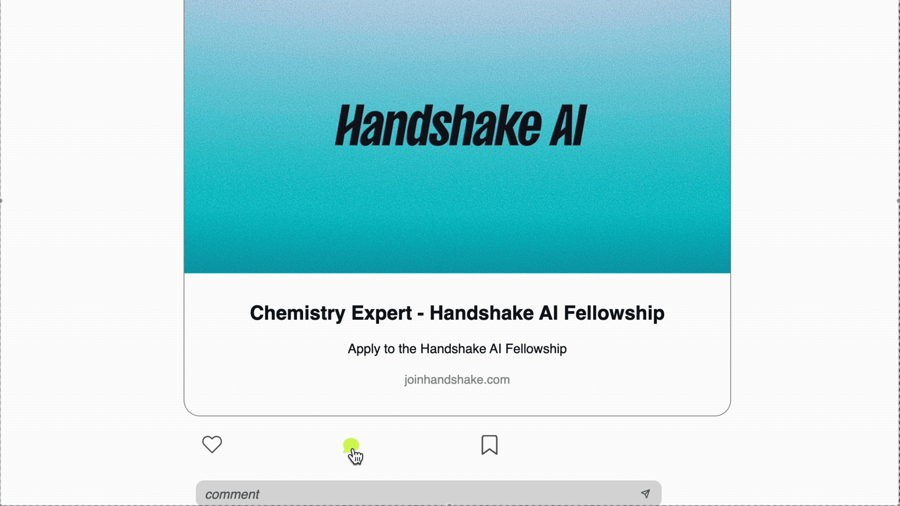
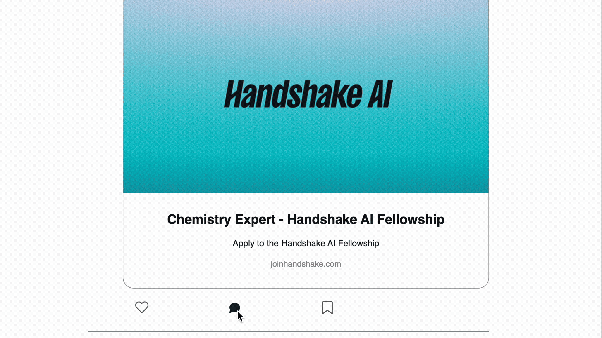

IDM241 Case Study | Handshake Post Container
Dec. 11, 2025 | C. To

Overview
Inspired by Handshake's events at colleges across America, I thought what would not be a better way to incorporate this experience in my academics? Handshake's post feature lacks the interpersonal details the rest of the site seems to incorporate. I reimagined the Handshake post container as the solo UX/UI designer and developer by adding including their signature gradients within the buttons, extra details in hover states, and including a "see less" feature which they do not currently have (as of December 6, 2025).
Context
Handshake is a platform marketed as the "Gen Z alternative" to career finding. Designed for college students, Handshake provides services like building a professional social network, easy applications to a wide range of fields, and career advice for fresh grads.
The attended task was to take an aspect of a website's microinteraction - in this case Handshake - to redesign in hopes to improve the current state of the given microinteraction. In its current state, the Handshake post found on any user's feed lacks feedback with the cursor not updating when hovering over clickable objects. In addition, Handshake's overall website design includes intricate microinteractions, the post design's lack thereof made it feel out of place overall.
This 10-week long project allowed me to become the solo UX/UI designer and developer to improve aspects listed above while challenging my prior knowledge of HTML, CSS, and JavaScript.
Process and Insight
Being a regular Handshake user, I was already familiar with Handshake's desktop interface. To ground the redesign in real patterns, I started this process by documenting the current post container and its microinteractions - describing and defining the triggers, rules, feedback, loops, and modes of how the component behaves.
This is the original:

Next, I returned to the platform to study Handshake's broader design language. I examined typography, color usage, button treatments, and existing microinteractions across the site. This helped me identify key visual and behavioral patterns, including how Handshake uses motion and color to guide attention. I compiled these findings into a working brand reference to maintain consistency throughout the redesign. One notable insight was Handshake's highly interactive onboarding flow. Users are introduced early to their signature color palette: D3FB53 and 062326. These appear not only in call-to-action elements, but also as gradients and accent details throughout the interface. Motion and animation play a significant role in reinforcing hierarchy and drawing attention.

To ensure I fully understood the system's foundations, I recreated the original post container through code. This exercise clarified the functional boundaries of the component and the experience users expect from it. Once the replication matched the live version, I transitioned into the redesign phase.
"Don't reinvent the wheel" - something that was encouraged early on in this process (thank you Jervo) that I kept in mind while designing. Handshake's information hierarchy already aligns with familiar social-platform patterns (e.g., LinkedIn, Facebook). Reworking this hierarchy would create unnecessary cognitive load for users who are accustomed to a standardized layout. Instead, I chose to preserve the structural skeleton-expandable captions, engagement icons, and logical information grouping-and build on top of it. With this in mind, my focus shifted to elevating the interaction quality.
For example, adding a hover state to embedded links using Handshake's signature green creates a clearer signal that an element is interactive; the hover state is more immediate and noticeable than a cursor change alone. Users benefit from stronger visual feedback. Another example is using the brand's color and signature animation styles to drive engagement. Introducing branded colors and subtle microinteractions to actionable icons (like the heart, comment, or bookmark) increases clarity and encourages exploration. These enhancements add personality without straying from established platform norms.
Solution
In its final form, I delivered a fully interactive prototype that not only aligned with Handshake's visual system but also introduced new microinteraction patterns that improved clarity, reduced friction, and created a more engaging browsing experience. Rebuilding the existing post container from scratch gave me a deeper understanding of component architecture, state management, and event-driven interaction design. Implementing my redesign required applying front-end fundamentals: HTML structure, responsive CSS, animations, and JavaScript logic. Knowing these fundamentals allowed me to create interactions that felt smooth, intentional, and consistent with the brand ecosystem.
Collapsible Caption

The original prototype included a "see more" action to expand long captions, but lacked a corresponding "see less" control. Through testing, it became clear that this created unnecessary friction - especially for users browsing many posts at once. Without a way to collapse captions back to their original state, users were forced to scroll through increasingly long posts, which increased cognitive load and made it harder to relocate previous content. To address this, I introduced a "see less" function, allowing captions to toggle between expanded and collapsed states. This maintains context while giving users control over how much content they view at a time.
Inline Commenting

Previously, tapping the comment icon navigated users away from the feed and into a dedicated post view. This abrupt transition disrupted the browsing flow and created an unnecessary page change for users who simply wanted to leave a quick comment. To minimize this friction, I redesigned the interaction so comments open as an inline pop-up directly beneath the post card. This allows users to engage without losing their place in the feed and supports more fluid interaction patterns.
Refining Microinteractions

I also enhanced the interaction bar by introducing distinct microinteractions for the heart, comment, and bookmark icons. These subtle animations reinforce the unique purpose of each action and provide immediate feedback, improving both usability and delight. The individualized microinteractions help users better understand the system’s response while making the interface feel more responsive and polished.
Results
Over the course of ten weeks, this project allowed me to move fluidly between research, design, and front-end development. Working as a solo UX/UI designer and developer pushed me to translate conceptual interaction ideas into functional, production-ready code, strengthening my understanding of how design decisions manifest in the browser.
One of the most meaningful takeaways was learning how to think through design constraints as a developer. Every microinteraction, hover state, and animation needed to be technically feasible, performant, and accessible. This dual perspecstive allowed me to make design choices that were not only visually compelling, but also maintainable and scalable from an developer’s standpoint.
Over this ten-week project, I moved seamlessly between research, design, and front-end development. My biggest takeaway was learning to think through design constraints as a developer. Every microinteraction had to be feasible, performant, and accessible. Balancing these considerations helped me create solutions that are both visually engaging and technically scalable.
If given more time, I would connect this into a real database allowing users to be able to post a comment and then design the process for that. This would mimic the real experience of commenting and would allow me to visualize the commenting experience that matches what I had designed.
I delivered a fully interactive prototype that aligns with Handshake’s visual system while introducing microinteractions that enhance clarity and reduce friction. Rebuilding the post container from scratch strengthened my grasp of component architecture, state management, and event-driven design, and applying core front-end skills: HTML structure, responsive CSS, animation, and JavaScript. These allowed me to create interactions that feel smooth and intentional.
Click me to view the Final Build